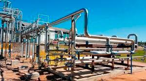

Conheça nossos serviços!
Tubulações
Amplamente presentes em diversos tipos de indústrias, como farmacêutica, alimentícia, petroquímica e química, as tubulações são conjuntos de tubos, válvulas e conexões utilizadas para o transporte de fluidos de um ponto a outro em uma planta.
Limpeza de Rios (Flotação)

Essa técnica consiste em adicionar bolhas de ar ao meio para que as partículas em suspensão no líquido aglutinem-se a essas bolhas. A espuma formada pode então ser removida, arrastando consigo as partículas de impurezas.
Tapa-Buracos

O asfalto velho é removido de toda a área ao redor do buraco, e o local é preenchido com asfalto novo. É um serviço bem mais fácil, com um custo e mão de obra menores.